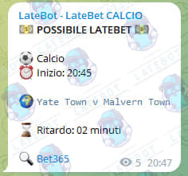

Per le LateBet - Orario il segnale che arriverà sarà del tutto simile a questo

In questo caso si tratta di un segnale proveniente dal bot Calcio e riporta tutte le informazioni essenziali, tra cui:
- - Orario di inizio della partita
- - Match
- - Ritardo rilevato dal bot
- - Link a Bet365 per verificare il match
A questo punto bisogna:
- - Aprire la pagina e controllare che sia realmente in latebet e non reinviata (useremo la chat per darci una mano a capire).
- - Seguire la partita su altri bookmakers (es: 22Bet, SofaScore, Diretta, ecc..) e giocarsi quello che è prendibile (nel calcio segna gol squadra X, angoli ecc. nel volley, hockey e basket: gara a 10, gara a 15, gara a 20, 1/2, over/under ecc).
- - Una volta giocata, attendere la convalida della scommessa e prelevare immediatamente la vincita.
Una volta presa la latebet ci sono vari modi per prelevare e profittare la scommessa, ad esempio è possibile ritirare immediatamente tutto il saldo con un metodo di pagamento veloce (es: PayPal, Skrill o carta bet365) oppure coprirsi con una strategia da un possibile void.
Dopo aver ritirato la vincita e dopo qualche ora dal termine del match sarà possibile avere due situazioni:
- Non succede nulla, cioè non viene voidata, quindi potete ridepositare subito.
- Viene voidata, vi andrà il saldo in negativo, a questo punto bisogna attendere qualche ora che d'ufficio vi rimetteranno il saldo a 0, a questo punto potete di nuovo depositare e giocare.
Attenzione: è altamente consigliato giocare tutto il saldo che si ha su Bet365 senza però mandare in accettazione la giocata